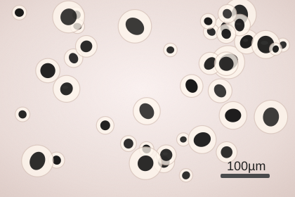
Nodular ferrítico
Grafita esferoidal + matriz ferrítica
Boa ductilidade, melhor alongamento e melhor resposta ao impacto. Espera-se menor dureza que uma matriz perlítica.
Referência técnica
Material de apoio para interpretar composição química, impurezas, metalografia, ferros fundidos, dureza, tração e impacto em peças metálicas usadas na homologação de materiais ferroviários. A leitura correta não é só “passou ou reprovou”: é entender se o conjunto químico, microestrutural e mecânico é coerente com a aplicação.
Use esta página como roteiro de conferência antes de aceitar um laudo. Primeiro veja se todos os ensaios exigidos foram apresentados. Depois confira se os resultados estão compatíveis entre si: química coerente com microestrutura, dureza coerente com resistência e impacto coerente com a condição metalúrgica da peça.
Fluxo de uso
js/limites.js.O carbono comanda dureza, resistência, soldabilidade, tenacidade e a própria família do material
O teor de carbono é o principal controlador das propriedades dos materiais ferrosos. Em aços-carbono, ele controla dureza, resistência, temperabilidade, ductilidade e soldabilidade. Em ferros fundidos, carbono acima de aproximadamente 2,11% passa a ser normal e deve ser interpretado junto com silício, magnésio, grafita e matriz.
| Classe | Carbono (% massa) | Comportamento esperado | Ponto de atenção |
|---|---|---|---|
| Baixo carbono | 0,05 – 0,30 | Mais dúctil, soldável e conformável. Menor dureza e menor resistência. | Se a peça exige alta resistência ao desgaste, pode ser insuficiente sem tratamento ou liga. |
| Médio carbono | 0,30 – 0,60 | Bom equilíbrio entre resistência e ductilidade. Responde melhor a tratamento térmico. | Faixa comum para peças que precisam de resistência mecânica com alguma tenacidade. |
| Alto carbono | 0,60 – 1,40 | Alta dureza e resistência ao desgaste. Menor ductilidade. | Maior risco de fragilidade, trinca e baixa soldabilidade. |
| Aço muito alto carbono / especial | 1,40 – 2,11 | Condição especial, próxima do limite metalúrgico do aço. | Não interpretar sem especificação clara do grau, tratamento térmico e aplicação. |
| Ferro fundido | > 2,11 | Carbono alto é esperado. A análise muda: grafita, matriz, Mg, Si e CE passam a ser decisivos. | Não reprovar como “aço com C alto” se a peça for fundida. |
A classificação por carbono é uma referência geral. Para homologação, prevalece sempre a especificação do material da peça. Em laudos com C acima de 2,11%, trate o material como provável ferro fundido até prova em contrário.
Quando C e Si são altos, a peça provavelmente não deve ser lida como aço comum
Ferro fundido é uma liga Fe–C–Si com teor de carbono normalmente acima da faixa dos aços. A diferença principal entre nodular, vermicular e lamelar não é só a composição química: é a forma da grafita observada na metalografia. A grafita funciona como uma descontinuidade interna; quanto mais arredondada, menor a concentração de tensão e melhor tende a ser a ductilidade.
| Tipo | Grafita observada | Propriedades típicas | Uso técnico da análise | Alertas |
|---|---|---|---|---|
| Ferro fundido nodular | Nódulos/esferoides de grafita. | Melhor combinação de resistência, ductilidade, impacto e fadiga entre os ferros fundidos comuns. | Verificar nodularidade, contagem de nódulos, Mg residual, matriz ferrítica/perlítica e carbonetos livres. | Nodularidade baixa, Mg fora de controle ou cementita livre reduzem desempenho. |
| Ferro fundido vermicular | Grafita compactada, “vermes” curtos e arredondados. | Intermediário entre nodular e lamelar: boa resistência mecânica, melhor condutividade/amortecimento que nodular. | Confirmar se a grafita é realmente vermicular e não mistura excessiva de lamelas/nódulos. | Processo é sensível ao Mg; pequenas variações mudam a morfologia. |
| Ferro fundido lamelar / cinzento | Grafita em flocos/lamelas. | Ótimo amortecimento, usinabilidade e condutividade; menor resistência à tração, ductilidade e impacto. | Avaliar tamanho/distribuição das lamelas e matriz. Pode ser bom para compressão/vibração, ruim para tração/impacto. | As pontas das lamelas concentram tensão e favorecem fratura frágil. |
| Ferro fundido branco / coquilhado | Pouca ou nenhuma grafita livre; presença de cementita/ledeburita. | Muito duro e resistente ao desgaste, porém frágil e de baixa usinabilidade. | Útil só quando alta dureza/desgaste é especificado. Deve ser visto como alerta em peça estrutural tenaz. | Carbonetos livres podem reprovar se a peça deveria ser nodular, vermicular ou lamelar cinzento. |
| Ferro fundido maleável | Grafita revenida/temper carbon após tratamento térmico. | Melhor ductilidade que o branco original; propriedades dependem fortemente do tratamento. | Verificar histórico térmico, matriz e formato da grafita. | Não confundir com nodular apenas olhando propriedades mecânicas. |
Carbono alto é esperado. Participa da grafita e do carbono equivalente. C* continua sendo % em massa por combustão.
Elemento grafitizante. Ajuda a formar grafita em vez de cementita branca. Também eleva resistência da ferrita.
Elemento-chave do nodular e vermicular. Teor residual em centésimos de % pode mudar toda a forma da grafita.
Estabiliza carbonetos. Excesso pode aumentar dureza e fragilidade, principalmente junto com S e segregação.
Aumenta fluidez, mas pode formar steadita frágil. Em peças de responsabilidade, deve ficar controlado.
Enxofre consome Mg e prejudica nodularização. S* por combustão continua sendo % em massa.
CE = C + Si/3 + P/3
O CE ajuda a entender tendência de solidificação. CE mais alto favorece grafitização; CE mais baixo e resfriamento rápido aumentam risco de ferro branco/cementita. Ele não substitui a micrografia, mas é uma ótima checagem cruzada.
Exemplo: C = 3,55%, Si = 2,35% e P = 0,03% → CE ≈ 4,34%.
| Matriz | O que tende a melhorar | O que tende a piorar | Leitura prática |
|---|---|---|---|
| Ferrítica | Ductilidade, alongamento, impacto, usinabilidade. | Dureza, resistência e desgaste. | Boa quando a peça precisa absorver deformação/impacto. |
| Perlítica | Dureza, resistência à tração, resistência ao desgaste. | Alongamento, impacto e usinabilidade. | Boa quando a peça precisa resistir a carregamento e desgaste. |
| Ferrítica + perlítica | Equilíbrio entre resistência e ductilidade. | Depende da proporção. | É uma condição comum em nodular de uso geral. |
| Bainítica / ausferrítica | Alta resistência e boa tenacidade quando bem controlada. | Processo e tratamento térmico mais críticos. | Exige norma/grau específico, não deve ser assumida genericamente. |
| Com carbonetos/cementita | Dureza e desgaste. | Tenacidade, ductilidade, usinabilidade e resistência a choque. | Alerta se a peça deveria ser nodular/vermicular estrutural. |
Exemplos visuais para reconhecer grafita, matriz, defeitos e coerência com os ensaios
Esta galeria serve para treinar o olhar do fiscal e do analista. Em relatórios como os de ombreiras, a micrografia não deve ser tratada como uma imagem decorativa: ela confirma se a composição química, a dureza, a tração e o impacto fazem sentido para o tipo de material informado.
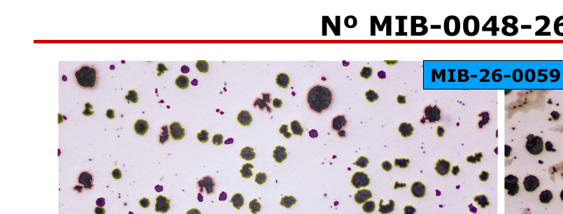
Neste exemplo, a peça apresenta composição típica de ferro fundido: C = 3,05%, Si = 2,89% e Mg = 0,026%. A micrografia mostra grafitas nodulares com matriz ferrítico-perlítica e ferrita concentrada ao redor das grafitas, formando o aspecto conhecido como “olho de boi”.

Boa ductilidade, melhor alongamento e melhor resposta ao impacto. Espera-se menor dureza que uma matriz perlítica.
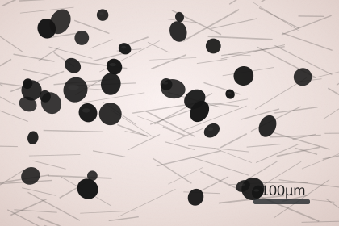
Tende a maior resistência e dureza. Pode perder alongamento e energia Charpy quando comparado ao ferrítico.
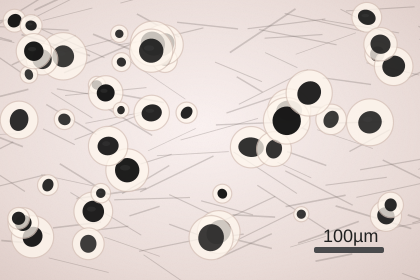
Aspecto comum em nodular ferrítico-perlítico. A ferrita clara contorna a grafita e a perlita permanece entre as células.
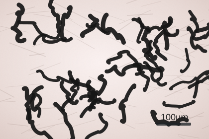
Intermediário entre nodular e lamelar. Exige controle fino de Mg; mistura excessiva com lamelas ou nódulos muda a propriedade.
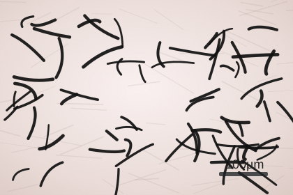
Típico de ferro fundido cinzento. Bom amortecimento e usinabilidade, porém baixa ductilidade e baixa resistência a impacto.
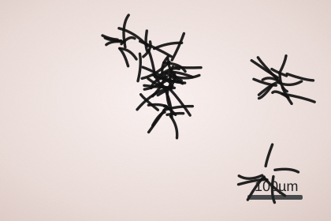
Distribuição menos uniforme. Pode indicar solidificação segregada, resfriamento inadequado ou variação local na seção da peça.
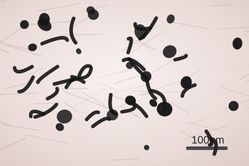
Alerta para ferro nodular: pode reduzir alongamento, fadiga e impacto. Verificar Mg residual e tratamento de nodularização.
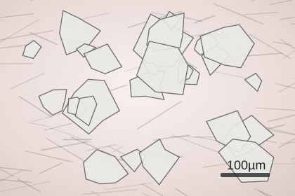
Aumenta dureza e desgaste, mas derruba ductilidade. Em ombreira estrutural, carboneto livre deve ser tratado como ponto crítico.
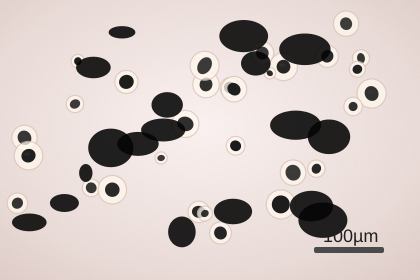
Vazios escuros e irregulares. Podem reduzir seção resistente, iniciar trincas e prejudicar fadiga.
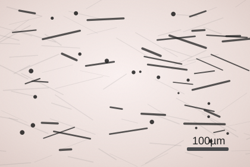
Inclusões alongadas ou agrupadas funcionam como concentradores de tensão. Conferir P/S, desoxidação e severidade.
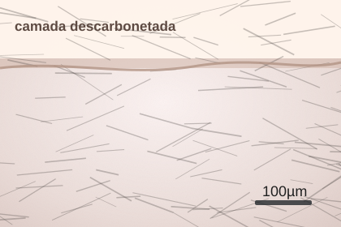
Camada clara empobrecida em carbono. Pode reduzir dureza superficial e resistência à fadiga.
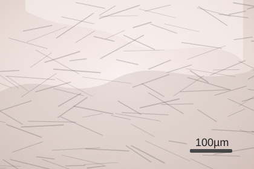
Coerente com aços hipoeutetóides. A fração de perlita deve crescer com o teor de carbono.
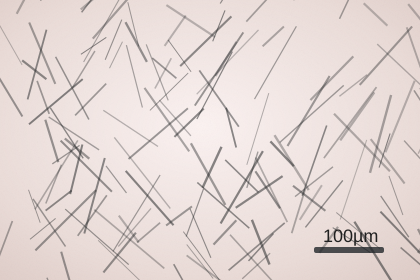
Estruturas aciculares sugerem têmpera ou austêmpera. Devem ser coerentes com dureza elevada e requisito do grau.
| O que olhar | Como aparece | Interpretação prática | Quando vira alerta |
|---|---|---|---|
| Forma da grafita | Nódulo, verme, lamela, mista ou ausente. | Define se o ferro fundido é nodular, vermicular, lamelar ou branco. | Quando a forma observada não combina com o material especificado. |
| Nodularidade | Percentual de partículas esferoidais. | Quanto maior, melhor tende a ductilidade no ferro nodular. | Nodularidade baixa em peça que deveria ser nodular. |
| Matriz | Ferrítica, perlítica, ferrítico-perlítica, bainítica, martensítica ou com carbonetos. | Explica dureza, resistência, alongamento e impacto. | Dureza/tração/impacto incoerentes com a matriz informada. |
| Região analisada | Núcleo, superfície, borda, seção fina ou seção grossa. | Ajuda a entender efeito de resfriamento e homogeneidade. | Laudo mostra só uma região quando a peça pode variar muito pela seção. |
| Defeitos | Poros, rechupe, inclusões, trincas, carbonetos livres. | São potenciais iniciadores de falha. | Quando aparecem em região crítica ou em quantidade relevante. |
C* · Si · Mn · P · S* · Cr · Ni · Mo · V · Ti · Cu · Al · Mg · Fe
Na análise química, o laudo deve permitir separar três coisas: elementos intencionais, elementos residuais e impurezas. Em materiais ferrosos para aplicação ferroviária, impurezas e residuais fora de controle podem reduzir tenacidade, favorecer trincas, alterar tratamento térmico ou indicar que o material não pertence ao grau especificado.
| Elemento | Leitura técnica no laudo | Quando ajuda | Quando preocupa | Classe |
|---|---|---|---|---|
| C* Carbono via combustão | Principal controlador metalúrgico. Em aço controla resistência/dureza; em ferro fundido indica a família do material e participa da grafita. | Quando está na faixa do grau e coerente com dureza, tração e metalografia. | Em aço, alto demais preocupa. Em ferro fundido, C acima de 2,11% pode ser normal e deve ser lido com grafita/matriz. | Elemento-base de controle |
| Si Silício | Desoxidante em aço e grafitizante em ferro fundido. | Útil em pequena quantidade para desoxidação e ganho moderado de resistência. | Em aço, excesso pode prejudicar tenacidade; em ferro fundido, ajuda a grafitização, mas precisa ser calibrado. | Liga/controle |
| Mn Manganês | Desoxidante e dessulfurante. Ajuda a neutralizar o enxofre formando sulfeto de manganês. | Melhora resistência e temperabilidade; reduz efeito nocivo do S quando em proporção adequada. | Muito baixo deixa o aço mais sensível ao S; muito alto pode alterar a temperabilidade esperada. | Liga/controle |
| P Fósforo | Impureza clássica. Pode segregar em contornos de grão. | Em geral, deve ser mantido baixo. | Eleva risco de fragilização, baixa tenacidade e trincas, principalmente em regiões críticas. | Impureza crítica |
| S* Enxofre via combustão | Impureza clássica. Relacionado a inclusões sulfetadas. | Em aços de usinagem pode ser intencional, mas em componentes estruturais geralmente deve ser baixo. | Pode causar fragilidade a quente, reduzir soldabilidade e gerar inclusões alongadas. | Impureza crítica |
| Cr Cromo | Aumenta temperabilidade, resistência ao desgaste e resistência à oxidação/corrosão em teores maiores. | Quando o grau especificado exige aço-liga ou baixa liga. | Se aparecer alto em aço-carbono comum, pode indicar mistura de material ou grau incorreto. | Liga/residual |
| Ni Níquel | Melhora tenacidade e resistência, especialmente em aços de baixa liga. | Ajuda na tenacidade quando previsto pela especificação. | Alto sem previsão pode indicar aço-liga diferente do contratado. | Liga/residual |
| Mo Molibdênio | Aumenta temperabilidade e resistência ao revenimento. Ajuda contra perda de resistência em temperatura. | Útil em aços baixa liga tratados termicamente, quando especificado. | Valor relevante sem previsão muda o comportamento do tratamento térmico e a classificação do aço. | Liga/residual |
| V Vanádio | Formador de carbonetos. Refina grão e pode aumentar limite de escoamento. | Bom para refino de grão e ganho de resistência em microadição controlada. | Excesso pode elevar dureza e reduzir ductilidade se não controlado. | Microaleante |
| Ti Titânio | Forte formador de carbonetos/nitretos. Ajuda no controle de grão. | Útil como microaleante para amarrar N/C e estabilizar grão. | Excesso ou distribuição ruim pode formar partículas grosseiras e afetar tenacidade. | Microaleante |
| Cu Cobre | Pode melhorar resistência à corrosão atmosférica em pequenos teores. | Quando controlado e previsto, pode contribuir para resistência à corrosão. | Em excesso pode causar fragilidade a quente durante processamento. | Residual/liga |
| Al Alumínio | Desoxidante forte. Também auxilia no refino de grão por nitretos de alumínio. | Ajuda a produzir aço acalmado e controlar tamanho de grão. | Excesso pode aumentar inclusões de alumina e prejudicar limpeza do aço. | Desoxidante/microaleante |
| Mg Magnésio | Modificador de inclusões. Em aço aparece normalmente em teores muito baixos; em ferro fundido nodular/vermicular modifica a grafita. | É decisivo para nodularização ou vermicularização quando o processo é controlado. | Mg baixo pode perder nodularidade; Mg excessivo pode gerar defeitos e carbonetos. | Residual/processo |
| Fe Ferro | Elemento majoritário do aço. Normalmente aparece como balanço da composição. | Serve para confirmar que a matriz é ferrosa e fechar o balanço químico. | Não costuma ser critério isolado de aprovação; deve ser interpretado com os demais elementos. | Base do material |
Os elementos C* e S* foram destacados como “via combustão”, conforme solicitado. Os limites definitivos devem ser preenchidos conforme a especificação do material, norma do produto, desenho ou requisito contratual aplicável.
O que a micrografia óptica deve confirmar
No resfriamento lento, o aço-carbono tende a formar ferrita, perlita e, em teores maiores de carbono, cementita. O ponto eutetóide fica próximo de 0,77% C. A microestrutura observada deve fazer sentido com o carbono medido, com a dureza e com eventual tratamento térmico informado.
Macia e dúctil. Alta fração de ferrita tende a reduzir dureza e resistência.
Conjunto lamelar de ferrita e cementita. Aumenta resistência conforme cresce a fração perlítica.
Fase dura e frágil. Rede em contorno de grão é ponto de alerta para fratura frágil.
Sinais de alerta na micrografia:
A dureza mede a resistência à deformação localizada. Em aço-carbono, ela cresce com teor de carbono, fração de perlita, martensita e tratamento térmico. A aproximação abaixo ajuda a verificar coerência com a tração:
σUTS (MPa) ≈ 3,45 × HB
Exemplo: 200 HB indica resistência à tração aproximada de 690 MPa. Diferenças grandes entre dureza e tração pedem reconferência de escala, corpo de prova, unidade, região ensaiada e tratamento térmico.
O ensaio de tração mostra como o material suporta carregamento progressivo até a ruptura.
O Charpy mede energia absorvida na fratura. É um indicador direto de tenacidade, especialmente importante quando a peça pode sofrer impacto, vibração, baixa temperatura ou concentração de tensões.
Um bom parecer não olha cada número isoladamente. O conjunto precisa contar a mesma história metalúrgica.
Perguntas que evitam aprovação apressada
Como ajustar a régua da análise
As faixas usadas no site são referências gerais. Para transformar a ferramenta em uma régua de homologação mais forte, substitua os valores genéricos pelos limites oficiais do material da peça. O arquivo principal é:
No arquivo js/limites.js | Significa | Como usar |
|---|---|---|
| min / max | Faixa aceitável. | Abaixo de min ou acima de max gera alerta. |
| limite | Teto de impureza. | Ideal para P e S, onde quanto menor, melhor. |
| severidade | Peso do desvio. | critico reprova a triagem; observacao vira ressalva. |
| opcional | Campo não obrigatório. | Se ficar em branco, o parâmetro é ignorado na análise. |
Para elementos como Mo, V, Ti, Al, Mg e Fe, mantive a lógica mais segura: eles entram no site e no guia, mas devem ser calibrados conforme a especificação do aço ou ferro fundido analisado para não gerar reprovação injusta. Em ferro fundido, atenção especial ao Mg residual, Si, CE e forma da grafita.
Base técnica para consulta e calibração
Este guia é apoio técnico interno. A decisão final de homologação deve considerar norma aplicável, histórico do fornecedor, criticidade da peça, rastreabilidade e análise do especialista responsável.